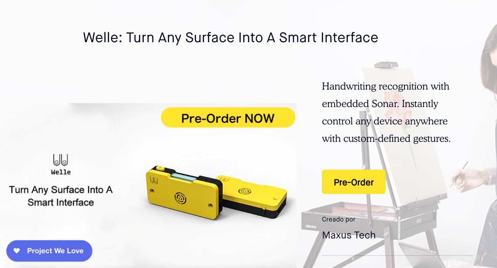
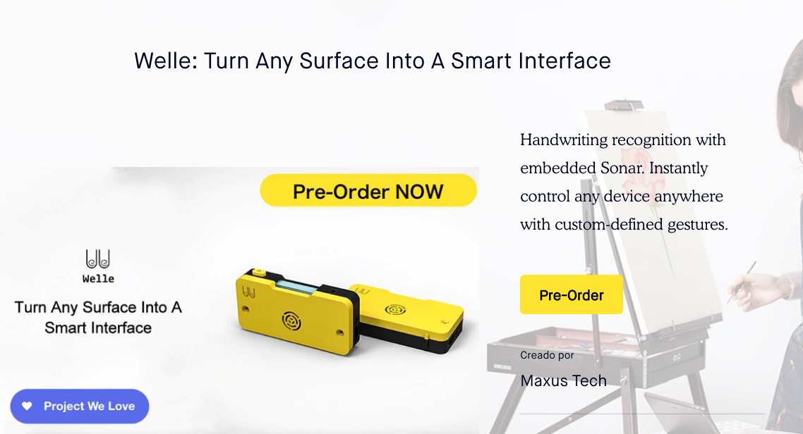
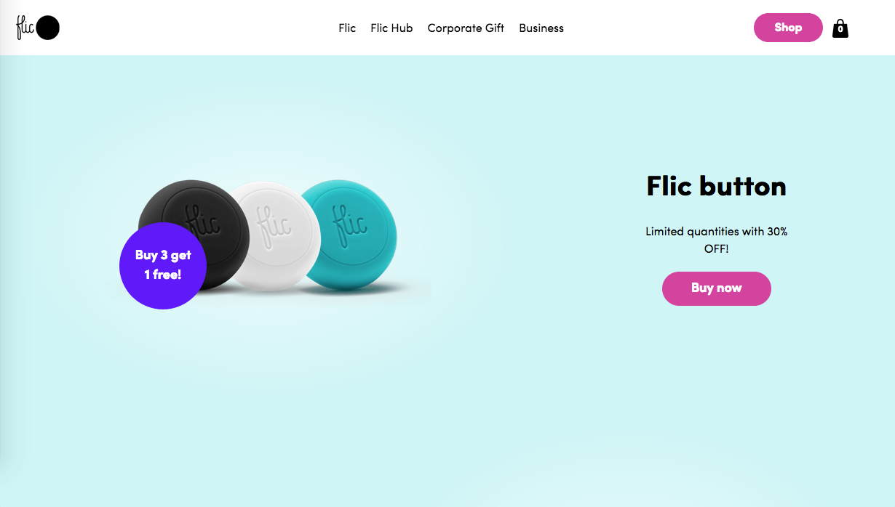

Benchmarking
We can identify two other products that can satisfy the need for a Knocki, these are also smart devices that the user can program. The main difference lies in the user interaction with the device. “Welle” an artifact based on sonar technology, it can do many thing with simple gestures and does not rely on one single pattern, you can actually customize the pattern and the decie can distinguish between them. The device connects via bluetooth, supports Android and IOS application services as well as its own API for secondary development. As the main uses for the device are to control air conditioner, make coffee, control lights, controll a robotic arm, Tv, change powerpoint presentations, doors, speakers, locks, etc. This product is like our Knocki but the main difference lies with the ability to transport the device, while welle still lacks of input richness and has a limited margin for interactive surface, Knocki not only responds for the intended area as long as it a¿can reach waves, but it is also made to be discrete and have a fixed position. Welle has a bright color and needs special input while Knocki can be activated by anyone and fairly easy.
 

Another product that has some of the qualities that of Knocki is “Flic” a smart button that can control devices when clicked and, with the help of the app, the user can program the actions wanted for the command. Flic is very to use, supports more than 1000 devices and apps, and its battery can hold up yo 18 months. However, we can already see that you can only do one action per button and if you miss which one you want, you may end up buying something unwanted or something similar. With Knocki that will not be the case, as the device can distinguish, in a very precise manner, patterns of waves.

Knocki provides alternatives in the moment the user attached knocki to any surface it becomes a smart surface so, with a couple of command that the users want and then the activities will be execute. The things we can do better is to develop better the device, that is because this product could be such a big difference 3 years ago, now with Apple Home with your phone much more easier than what knocki provides.